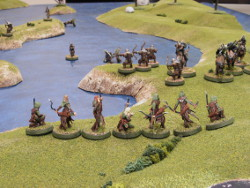
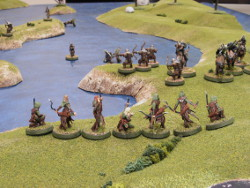

{kind=link}
{kind=link}
{kind=link}
{kind=link}
{kind=link}
{kind=link}
{kind=link}
{kind=link}
{kind=link}
{kind=link}
{kind=link}
{kind=link}
{kind=link}
{kind=link}
{kind=link}
{kind=link}
{kind=link}
 

This is a scenario of Games Workshop's Hobbit Strategy Battle Game, from the Desolation of Smaug journeybook.
Here we see the Bilbo and his dwarf companions escaping in barrels from the jails of the elven king. In the book, that's all there is, so book purists will want to try the scenario without the Evil forces. But the movie introduces a crowd of orcs under Bolg trying to kill the dwarves, and a band of elves under Legolas and Tauriel trying in turn to kill the orcs. And that's what we're going to try here.
(Click on any image to see an enlargement.)
The board is a little bigger than usual at 4' x 6'. The water is deep, so the swimming rules get a good workout in this scenario. We're at the west edge of the board, where the barrels are going to start, facing east. If 9+ dwarves and Bilbo make it off the eastern edge, the Good side wins.
The dwarves and Bilbo are in their barrels. I love these models, even though they are really only useable in this one scenario.
The Mirkwood Rangers are led by Legolas (left) and Tauriel (right). If using the Fellowship Legolas model bothers you, warning: there's worse yet to come.
The Warg Riders are lead by Bolg (front left) and Fimbul (front right). The leader models are official, though I've used my own color scheme for Fimbul. The rest of the "Hunter Orcs on Fell Wargs" are really just regular ol' Two Towers-era warg riders. I've never used these guys in a game, so I can't justify buying entirely new models. The metal figures look better to my eyes, but the plastics are more practical, as by not gluing the riders to the warg they can double as plain wargs as well.
My "Hunter Orcs" are likewise just a regular box of orcs, barring Narzug (in front) who is again a regulation model in a custom painting scheme.
The dwarves begin in their barrels within 3" of the west edge. They set up as far west as they can and towards the left (north) bank a bit so as to give the rangers a chance to jump on in a move or two. The rangers themselves will enter on Turn 1.
Evil sets up anywhere at least 24" away from the dwarves. Not having better ideas, I divided the foot troops into three groups and placed one (led by Narzug) on the central island, one on the left bank, and one on the right. The warg riders were likewise split in half, Bolg leading the left and Fimbul the right. Some troops were deployed a little farther back as a reserve, but the bowmen were all placed to get into action as quickly as possible.
As always, Good starts a scenario with Priority.
The rangers enter from the bottom (west) edge, 8 on the right bank and 12, along with Legolas and Tauriel, on the left. Four of the rangers make a full move hoping to be in position to jump on barrel next turn. The rest make only a half move so that they can fire their bows.
The barrel movement is randomized and so the beginning tight-knit formation spreads out a bit. A couple dwarves contemplate taking the southern route, but the island placement makes this seem difficult.
The evil archers move half where needed to get within range. The hand weapon warg riders rush the rangers. The reserves move to occupy the eastern islands (off in the distance) and one orc drowns (just visible in the middle image).
In Shooting, the Good site kills Fimbul's warg, an orc bowman, and puts 2 wounds on Bolg! A point of Fate negates one of the latter.
Evil's return fire is ineffective until the very last shot, which takes out a ranger.
Evil Priority, 2-2.
The Evil archers mostly hold to maximize their chances of a hit. The melee figures charge. Two orcs drown swimming.
Three rangers jump on the barrels to protect Bilbo and two of the dwarves. The rest of the good force stays put to avoid the movement penalty when shooting, too.
Evil's shooting is a bit improved over last turn, as Narzug puts a hit on Dwalin's barrel and an orc archer does the same for Thorin. In return, a ranger kills a warg rider, Legolas puts a 2nd hit on Bolg, and then Tauriel delivers the coup de grâce on the leader. Bolg's warg gets 6,6 on his Courage check and sticks around for some revenge.
An ominous start for Evil...
Evil Priority, 6-2.
Tauriel calls a Heroic Move to avoid being charged by the wargs. A few brave rangers "volunteer" to face the wargs while the rest of the rangers, Legolas, and Tauriel inch forward to better their range on the orcs near the barrels.
The Evil bowmen hold their positions again to maximize the effectiveness of their bows, while the rest of the orcs move to engage. Luck is not with the swimmers and four of them drown.
Alas, Evil shooting is completely ineffective. Good has more luck, scoring two hits on Narzug (one negated by Fate) and killing a warg and a bowman.
The orcs fare better in the combat phase, winning all the melees and taking down two of the Rangers.
Good Priority, 2-1.
On the left bank, the rangers swarm the wargs so that Legolas and Tauriel can concentrate on taking down the threats to the barrels. On the right bank, the rangers hold and accept the charge of the wargs.
The barrels are almost at the halfway point on the river and three orcs are close enough to jump on, with two others close enough to attack.
Elvish archery is feeble, with only Tauriel managing to hit; she kills two orcs. Evil responds by putting a hit on Balin's barrel.
The dwarves make up for the lack of shooting results by killing three of the attacking orcs. Only Ori loses his fight, but he is lucky enough to avoid any wounds. The rangers kill a warg and two warg riders, one of the striken riders' warg deciding to stick around.
Another frustrating turn for Evil.
Evil Priority, 3-1*.
There's an asterisk on the Priority results because Balin spends 1 Will point to reroll Priority, and gets a 4, steal Priority for Good. In response, Fimbul calls a Heroic Move, and decides to take the warg riders on the right bank east. After all, the rangers are irrelevant to winning the scenario. Another unlucky Orc drowns.
On the left bank, the rangers swarm the wargs again -- surely they will win a combat eventually! -- while Legolas and Tauriel remain free to shoot their bows. The barrels continue their drift down the river and pick up a few more unwelcome passengers.
Good shooting is tragically poor, killing only Fimbul's warg and one of the orcs on a barrel. (In retrospect, it's not clear whether a barrel-riding orc is a legal shooting target or not.)
Evil shooting, such of it is, sees Narzug putting a wound on Balin.
Combat again favors Evil, as an orc puts a wound on Bifur (which is a bit of a mixed blessing as it activates his Battle Damaged special rule) and the wargs continue to win their fights and kill another ranger.
Good Priority, 5-3.
The rangers on the left bank tackle the wargs again. You have to admire their persistence, if not their intelligence. On the right bank, the rangers half-move as their bows will still be able to reach targets even after the Evil move. They'll never catch the orcs, so archery is about all they can contribute at this point.
The orcs on the right bank run as fast as they can, hoping to catch up to any stragglers in the barrels. There's only one free Evil model on the left bank -- a warg rider bowman -- and he runs to hide behind a tree, where he can take potshots at the barrels next turn.
The warg riders hanging out on the far islands swim towards the nearing barrels. With a dieroll of 6 one warg rider leaps from his Warg to stand atop Dwalin's barrel!
In the Shooting phase, Legolas kills Narzug at last, and rangers take out another orc bowman, the orc on Bifur's barrel, and put a hit on Fimbul. No Evil shooting is possible this turn -- every bowman either moved, is out of range, or is dead.
The wargs continue to win in combat. The trapped warg's sad roll of 2 still manages to beat the Elves' 1-1-1, and the warg kills a ranger. The rangers on the other warg do better with 5-4, but the warg gets the 6 and he, too, kills a ranger.
If only the orcs attacking the barrels were as lucky! Well, they are in a way, because both Fili and Dwalin win their fight but neither can score higher than a 2 on their rolls to wound, so their attacking orcs live to fight another day. Or turn, at least.
Evil Priority, 3-2.
Balin tries to steal Priority again using another Will point, but he fails with a 1.
The wargs charge everywhere, though still too far away to engage on the right bank, where Fimbul calls a Heroic March to try to get back into the game. Three orcs climb aboard the barrels.
The elves on the left bank move to attack the wargs, even Legolas joining in because clearly the rangers on their own aren't cutting the mustard. Tauriel remains unengaged for some long range sniping.
Tauriel manages a deadeye shot on the warg in the river. Everyone else whiffs.
In combat, an orc attacks Kili and manages to get the 6, but so does Kili and this time he succeeds in killing his foe.
Thorin has a little harder time, getting 5 against an Evil 6, but a Might point solves that problem and he manages to kill both the orc and the warg attacking him.
Dwalin and his foe only get 4 highest, so Dwalin wins on Fight value and he, too, kills his orc.
The wargs finally succumb to numbers. They sure punched above their weight class, though.
Good priority, 3-1
Evil's clearly lost at this point, but I played one more turn anyway because it was fun.
Fimbul uses his last Might point to call another Heroic March, but elvish archery takes out the only warg rider really capable of catching the barrels and I decided to call it as a decisive victory for Good.
That wasn't particularly close, was it? As a game, I mean; it actually was pretty close to the movie result.
I think having the wargs get caught up in attacking the elves, and vice versa, was a mistake. The dwarves are really the only figures that matter. So I really misused Bolg and Fimbul going after the rangers.
And the orcs attacking the barrels could have really used help from those heroes. The dwarves have better Fight values, Might points to modify die rolls, and the Wounds and Fate to survive a couple of rounds. All of which makes it hard for even Hunter Orcs to win combats against the dwarves and take advantage of the dwarves being trapped within their barrels.
I think it's worth considering making the dwarves unarmed in this scenario. Maybe say they are unarmed until they kill an enemy, in which case they can arm themselves, which is true to the movie albeit requires a bit more record-keeping.
The barrels move surprisingly quickly. At d6+3" per turn, they are on average faster than orcs (6"), much less dwarves on land (5"). The wargs can outrun them but Evil's foot models pretty much get one shot at the barrels before they fly away. So setting up some reserves was a good idea, even if a lot of them drowned trying to get out to the islands.
The map configuration has some pretty big effects on play. I hadn't realized until about halfway through the scenario that the Dwarves had almost a straight shot down the river, with little need to manuever. I'd move the islands next outing to force more lateral movement.
This scenario isn't suited for truly competitive play because the rules for how the barrels work seem under-specified. Here's a sampling of the situations that you have to work out:
All in all, though, a thematic scenario with some unusual game mechanics that was a lot of fun to play.
{kind=link}
{kind=link}
{kind=link}
{kind=link}
{kind=link}
{kind=link}
{kind=link}
{kind=link}
{kind=link}
{kind=link}
{kind=link}
{kind=link}
{kind=link}
{kind=link}
{kind=link}